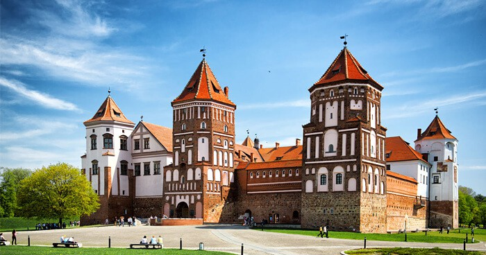

Мирский замок, замково-парковый комплекс «Мир» — оборонительное укрепление и резиденция в городском посёлке (пгт) Мир Кореличского района Гродненской области Белоруссии. Памятник архитектуры, внесён в список Всемирного наследия ЮНЕСКО (с 2000 года). Архитектурный комплекс включает в себя замок XVI—XX веков, валы XVII—XVIII веков, пруд 1896—1898 годов, часовню-усыпальницу Святополк-Мирских с домом сторожа и воротами, пейзажный и регулярный парки, дом управляющего. Находится в пгт Мир, на правом берегу реки Миранки.